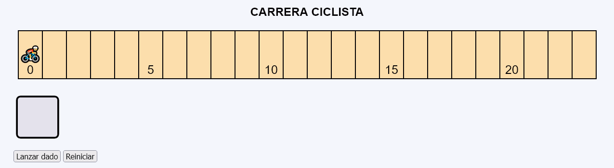
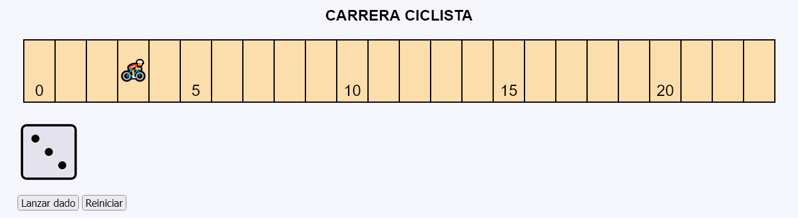
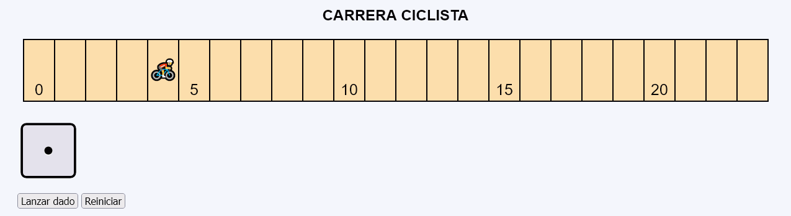
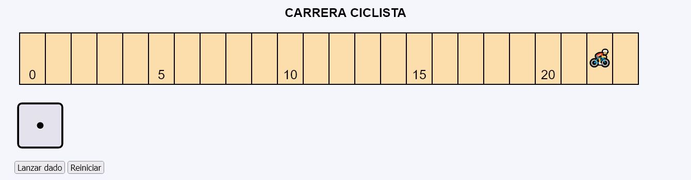
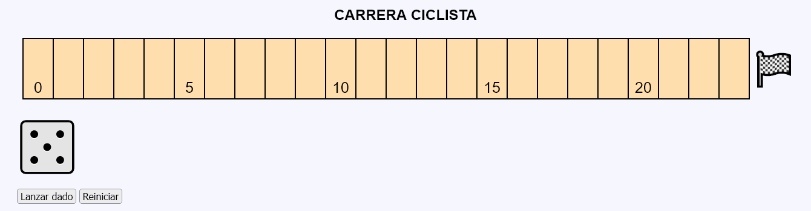

Carrera ciclista - Ejemplo de programa
Nota: El día del examen los alumnos no tienen acceso a este ejemplo, solamente tienen acceso a las capturas del apartado anterior.
Un ejemplo de programa puede probarse en la ventana siguiente:
En este ejercicio se debe crear un programa que imite el movimiento de un ciclista por una pista.





<p class="mcl-svg-figura">
<svg version="1.1" xmlns="http://www.w3.org/2000/svg" width="1300" height="120" viewBox="-10 -10 1300 120">
<rect x="0" y="0" width="1200" height="100" stroke-width="2" stroke="black" fill="navajowhite" />
<text x="25" y="90" font-size="25" text-anchor="middle">0</text>
<line x1="50" y1="0" x2="50" y2="100" stroke-width="2" stroke="black" />
<line x1="100" y1="0" x2="100" y2="100" stroke-width="2" stroke="black" />
<line x1="150" y1="0" x2="150" y2="100" stroke-width="2" stroke="black" />
<line x1="200" y1="0" x2="200" y2="100" stroke-width="2" stroke="black" />
<line x1="250" y1="0" x2="250" y2="100" stroke-width="2" stroke="black" />
<text x="275" y="90" font-size="25" text-anchor="middle">5</text>
<line x1="300" y1="0" x2="300" y2="100" stroke-width="2" stroke="black" />
<line x1="350" y1="0" x2="350" y2="100" stroke-width="2" stroke="black" />
<line x1="400" y1="0" x2="400" y2="100" stroke-width="2" stroke="black" />
<line x1="450" y1="0" x2="450" y2="100" stroke-width="2" stroke="black" />
<line x1="500" y1="0" x2="500" y2="100" stroke-width="2" stroke="black" />
<text x="525" y="90" font-size="25" text-anchor="middle">10</text>
<line x1="550" y1="0" x2="550" y2="100" stroke-width="2" stroke="black" />
<line x1="600" y1="0" x2="600" y2="100" stroke-width="2" stroke="black" />
<line x1="650" y1="0" x2="650" y2="100" stroke-width="2" stroke="black" />
<line x1="700" y1="0" x2="700" y2="100" stroke-width="2" stroke="black" />
<line x1="750" y1="0" x2="750" y2="100" stroke-width="2" stroke="black" />
<text x="775" y="90" font-size="25" text-anchor="middle">15</text>
<line x1="800" y1="0" x2="800" y2="100" stroke-width="2" stroke="black" />
<line x1="850" y1="0" x2="850" y2="100" stroke-width="2" stroke="black" />
<line x1="900" y1="0" x2="900" y2="100" stroke-width="2" stroke="black" />
<line x1="950" y1="0" x2="950" y2="100" stroke-width="2" stroke="black" />
<line x1="1000" y1="0" x2="1000" y2="100" stroke-width="2" stroke="black" />
<text x="1025" y="90" font-size="25" text-anchor="middle">20</text>
<line x1="1050" y1="0" x2="1050" y2="100" stroke-width="2" stroke="black" />
<line x1="1100" y1="0" x2="1100" y2="100" stroke-width="2" stroke="black" />
<line x1="1150" y1="0" x2="1150" y2="100" stroke-width="2" stroke="black" />
<line x1="1200" y1="0" x2="1200" y2="100" stroke-width="2" stroke="black" />
<text x="25" y="60" font-size="35" text-anchor="middle" style="transform: scale(-1, 1); transform-box: fill-box; transform-origin: center;">🚴</text>
</svg>
</p>
<p><img src="img/dados/0.svg" alt="0" width="100" height="100"></p>
...
<line x1="1200" y1="0" x2="1200" y2="100" stroke-width="2" stroke="black" />
<text x="175" y="60" font-size="35" text-anchor="middle" style="transform: scale(-1, 1); transform-box: fill-box; transform-origin: center;">🚴</text>
</svg>
</p>
<p><img src="img/dados/3.svg" alt="0" width="100" height="100"></p>
...
<line x1="1200" y1="0" x2="1200" y2="100" stroke-width="2" stroke="black" />
<text x="225" y="60" font-size="35" text-anchor="middle" style="transform: scale(-1, 1); transform-box: fill-box; transform-origin: center;">🚴</text>
</svg>
</p>
<p><img src="img/dados/1.svg" alt="0" width="100" height="100"></p>
...
<line x1="1200" y1="0" x2="1200" y2="100" stroke-width="2" stroke="black" />
<text x="1240" y="70" font-size="55" text-anchor="middle">🏁</text>
</svg>
</p>
<p><img src="img/dados/2.svg" alt="2" width="100" height="100"></p>
Nota: El día del examen los alumnos no tienen acceso a este ejemplo, solamente tienen acceso a las capturas del apartado anterior.
Un ejemplo de programa puede probarse en la ventana siguiente: